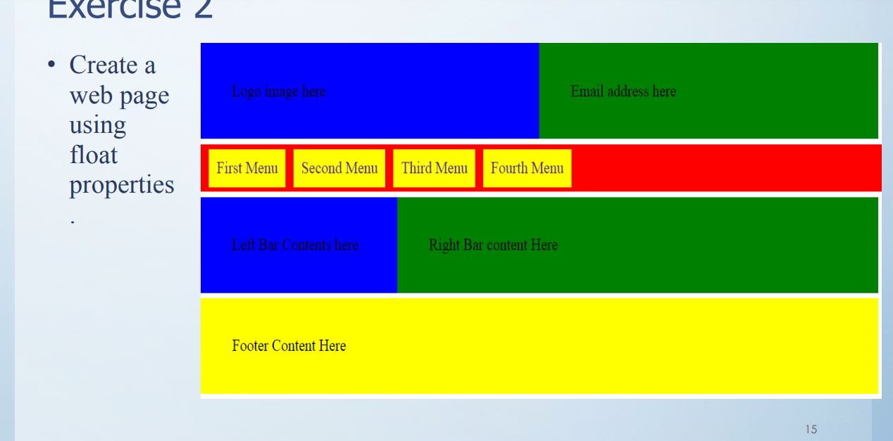
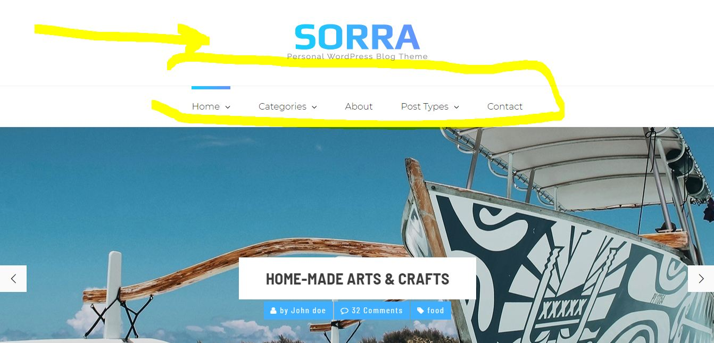
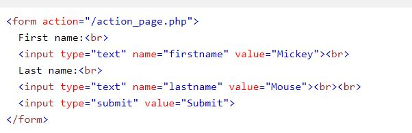

My Experience on learning web development
Kalvin 
Sorra 
This link was used for forms. https://www.w3schools.com/html/html_forms.asp

.
This video was help ful with transition of images.

. These are the wireframes used to create the website.
landing page

about

cv

social

contact

The main aim as to create a simple website using simple html and css codes. The website would include the title, navigation bar to change from one website to another. A footer section to contain different media links. We underwent group discussions and meetings to brainstorm about webpage layouts. Rough sketches of Wireframes were created. Discussions on using media queries for responsive webpage design were made.
References
http://preview.themeforest.net/item/sorra-personal-blog-html-template/full_screen_preview/22012453https://themeforest.net/item/kalvin-portfolio-template/22191766?s_rank=4
https://www.w3schools.com/html/default.asp
https://www.w3schools.com/css/default.asp